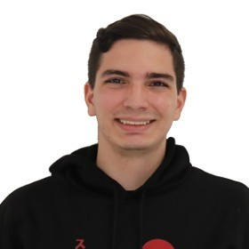

Portafolio Digital
¡Hola! Soy Alejandro Gonzalez.
Estudiante de Ingeniería de Software en la Universidad Tecnologóica de Panamá. Graduado con honores en el Instuto Técnico Don Bosco, en el bachiller de ciencias con énfasis en informática. Actualmente tengo 20 años. Cuento con experiencia en el sector de ventas al por mayor y al detalle. Cuento con experiencia en el diagnóstico y reparación de computadoras y servidores. Participé en la Hackathon de Copa 2022 sobre Infraestructura como alternativa a código. Quedé de segundo lugar en la Hackathon de Samsung - Python e inteligencia artificial Bootcamp.
Proyectos
Proyecto de Hackathon SIC 2023 - Soluciones con IA para empresas en desarrollo. Enlace al proyecto.
Habilidades
- Liderazgo de equipos.
- Ingles intermedio
- Habilidades Comunicativas.
- Fácil adaptabilidad.
- Disposición al trabajo.
- Facilidad con los trabajos grupales.
Lenguajes de programación.
- Java
- Python
- PL-SQL Oracle
- Html
- CSS
- JavaScript
- C
- C++
- C#
- Visual Basic
Experiencia
- Experiencia en ventas remotas - año 2018/2023.
- Experiencia en ventas de mostrador - año 2019.
- Gerencia de sucursal de ventas - año 2019/2020.
- Ventas al por mayor y al detalle - año 2021
- Soporte y mantenimiento de página web - Año 2022 / Hasta la actualidad.
- Diagnóstico, armado y reparación de computadoras personales - Año 2019 / Hasta la actualidad.
Github
Me podrás encontrar en Github en el siguiente enlace: Click aquí para entrar al perfil
Linked In
Me podrás encontrar en Github en el siguiente enlace: Click aquí para entrar al perfil